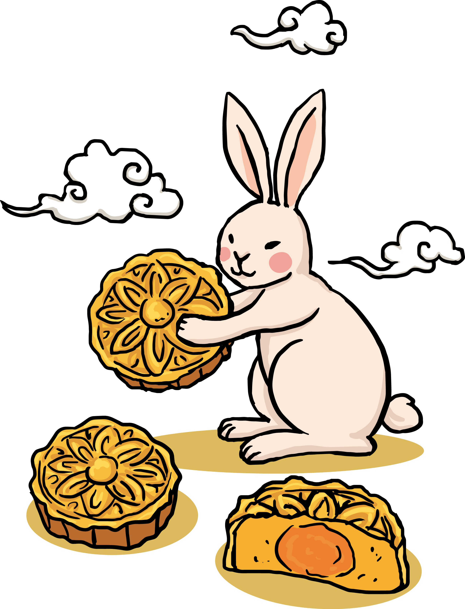

Happy
New Year
Время сквозь пальцы песком утекает,
Буднями мчатся недели, года!
Привычный уклад зимний праздник меняет,
Когда вокруг ёлки, огни, суета!
Так пусть в эти дни волшебство приключится,
Магия праздничных, радостных дней!
И сказка к вам в дверь в тот же миг постучится,
Желания ваши исполнив скорей!
Пусть отзовется искоркой тепла,
Этот праздник славный в сердце каждом,
Так, чтоб душа от счастья расцвела,
И чтобы сказкой стала жизнь однажды!
Он воплотит заветные мечты,
Самые прекрасные и смелые надежды,
И в мире станет больше доброты.
В этот праздник зимний, белоснежный!
Read More

Символ года
Символ 2023 выступает за разумную стабильность и мир, дарит процветание и всячески поощряет создание
семьи. Близкие люди для него в приоритете. Грандиозных событий на год лучше не намечать.
Кролик не приемлет резких движений и «виражей» судьбы.
Цикл восточного календаря составляет 12 лет. Каждому году соответствует свое животное-покровитель,
четвертым из которых в китайской традиции считается Кролик (или Заяц), а во вьетнамской — Кот .
Именно поэтому году благоволят сразу два животных.
Новогодние поздровления
В Новый Год желаю здоровья и тепла,
Любви, романтики чуть-чуть,
Чтобы жизнь счастливая была,
Чтобы все сложилось – в этом суть!
Пусть в Вашем доме будет всё -
Любовь, Покой, Уют, Богатство,
Пусть будет в нём всегда тепло,
Чтобы хотелось возвращаться!
Желаю тебе в Новом Году — пролетающих понедельников,
быстрых вторников,
езаметных сред,
праздничных четвергов,
искрящихся пятниц и самых сладких выходных!
Пусть Новый Год море радости, счастья
Подарит тебе в Новогоднюю Ночь!
Пусть станет жизнь сказочной, яркой,
Пусть все заботы унесутся прочь!